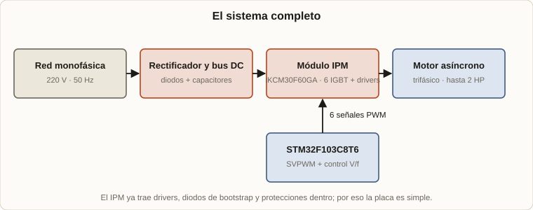
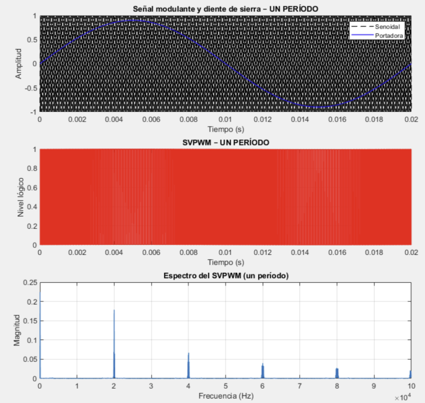
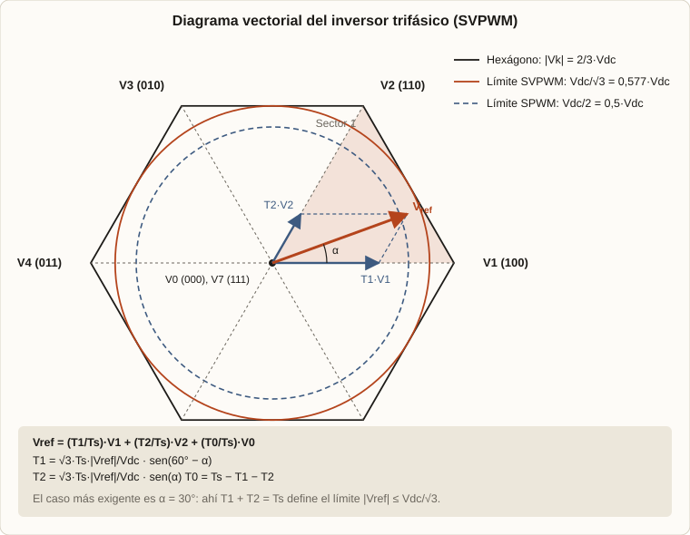
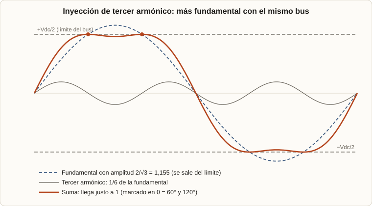
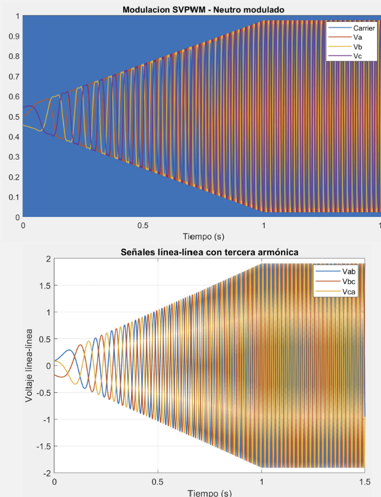
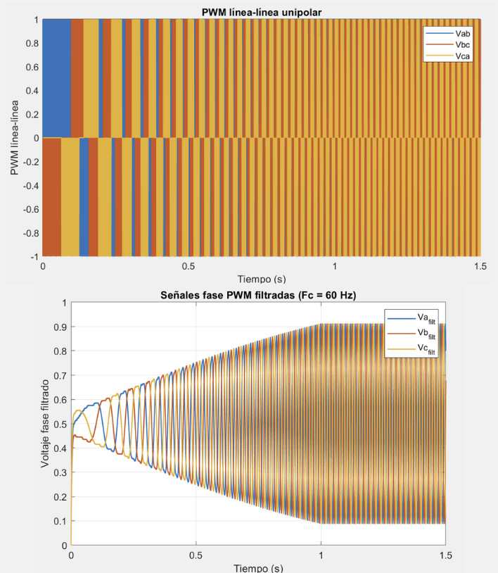
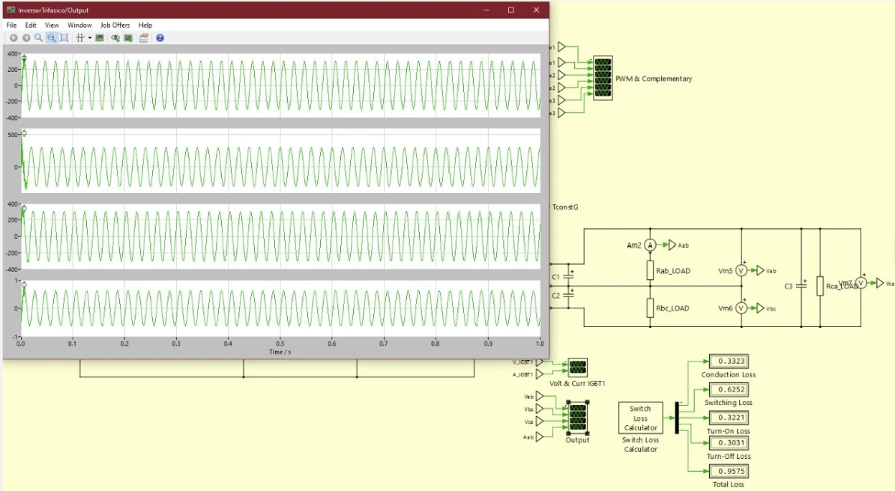
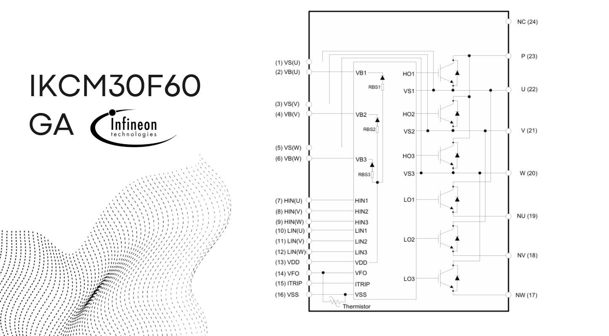
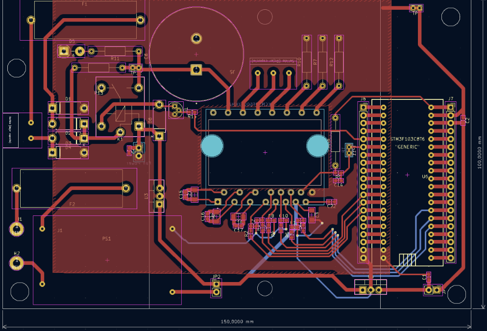
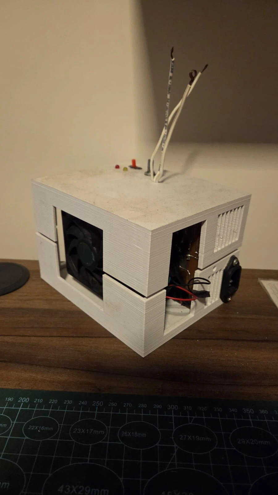

2025 · Electrónica de potencia · MATLAB · PLECS · KiCad
Mi primer inverter trifásico: de la simulación a un motor de 2 HP
Hasta 2025 mi electrónica de potencia eran proyectos chicos: dimmers armados con triacs y diacs. Este fue mi primer acercamiento a la electrónica de potencia con un proyecto complejo y un diseño nuevo, en el que había que resolver a la vez matemática de modulación, simulación, elección de un módulo de potencia y una placa que lo maneje.
El objetivo: un inverter trifásico capaz de mover con tranquilidad un motor asíncrono de 2 HP alimentado con la tensión monofásica de la red. El módulo de potencia soportaría más que eso, pero solo lo probé hasta 2 HP.
1. El sistema en una imagen
2. Cómo se fabrica una senoidal con interruptores
3. SVPWM: pensar en vectores
4. Tercer armónico: de dónde sale el margen
5. Control V/f (y el FOC que quedó sin simular)
6. Simulación en MATLAB y en PLECS
7. El hardware: módulo IPM y placa
8. Qué me llevé
1. El sistema en una imagen
Un motor trifásico necesita tres tensiones senoidales desfasadas 120°, de amplitud y frecuencia ajustables. De la red monofásica salen 220 V a 50 Hz. Por eso el camino tiene tres etapas: rectificar a un bus de continua, ondular con seis interruptores (un puente trifásico) y controlar esos interruptores para que la salida sea la senoidal que el motor necesita.

Lo que importa es cómo se eligen esos pulsos.
2. Cómo se fabrica una senoidal con interruptores
Cada rama del puente tiene un interruptor de arriba y uno de abajo que nunca conducen a la vez. Lo único que se puede hacer con una rama es conectar su salida al positivo o al negativo del bus. Para obtener una senoidal se usa modulación por ancho de pulso (PWM): se compara una señal de referencia senoidal (la que quiero) con una portadora de alta frecuencia (un diente de sierra o triangular). Cuando la referencia es mayor, el interruptor de arriba conduce; cuando es menor, el de abajo.
El resultado es un tren de pulsos cuyo ancho promedio sigue a la senoidal: pulsos anchos cuando la referencia es alta y angostos cuando es baja. Para recuperar la senoidal se filtra con un pasa-bajos. La energía de la senoidal está en la frecuencia fundamental (50 Hz) y la del PWM está muy arriba, alrededor de la frecuencia de la portadora.

El espectro de abajo lo muestra: casi toda la energía está en la portadora (20 kHz) y sus múltiplos (40, 60, 80 kHz…), lejos de los 50 Hz. Un pasa-bajos deja pasar la fundamental y elimina el resto. En el sistema real el filtro es el propio motor, cuya inductancia no deja que la corriente siga a los pulsos rápidos.
Para un motor de 50 Hz, una portadora de 20 kHz significa 400 pulsos por ciclo. Ese fue el criterio de diseño: una relación de frecuencias de al menos 400 veces. Tiene dos ventajas: los armónicos quedan muy lejos de la fundamental, y 20 kHz está por encima de lo audible.
Falta decidir cómo repartir los pulsos entre las tres ramas para sacar el máximo del bus.
3. SVPWM: pensar en vectores
En lugar de tratar cada fase por separado, la modulación por vector espacial (SVPWM) considera las tres fases juntas como un único vector giratorio. Cada rama tiene dos estados posibles, así que el puente tiene 2³ = 8 combinaciones:
- 6 vectores activos (V1 a V6): de módulo
2/3·Vdcy separados 60°. Forman un hexágono. - 2 vectores nulos (V0 = 000 y V7 = 111): todas las salidas conectadas al mismo lado, sin tensión aplicada. Están en el centro.
Lo que quiero aplicar al motor es un vector de referencia Vref que gira a la frecuencia de salida. En cada período de conmutación Ts, Vref se aproxima como un promedio en el tiempo de los dos vectores activos vecinos y un vector nulo:

Con α el ángulo dentro del sector (0° a 60°), resolviendo la proyección:
T2 = √3·Ts·(|Vref|/Vdc)·sen(α)
T0 = Ts − T1 − T2
Hay una condición obvia: T₀ no puede ser negativo, o sea T₁ + T₂ ≤ Tₛ. La suma es máxima en el centro del sector (α = 30°), donde vale √3·Ts·|Vref|/Vdc. Imponer que no supere Ts da el límite:
Ese círculo es la zona donde el vector puede girar sin que ningún sector se quede sin tiempo. Si el vector se sale del círculo, ya no se puede sintetizar sin distorsión. En el diagrama se ve además el círculo punteado: es lo que se consigue con PWM senoidal común (Vdc/2). SVPWM aprovecha una porción del hexágono que la modulación senoidal deja sin usar.
Falta ver cómo se obtiene esa ganancia, sin tener que trabajar con vectores.
4. Tercer armónico: de dónde sale el margen
El mismo resultado se puede obtener de una forma más simple, y es la que usé: modulación con inyección de tercer armónico, que también se puede ver como modular el neutro.
La restricción
Cada rama solo puede entregar, respecto del punto medio del bus, una tensión entre −Vdc/2 y +Vdc/2. Con PWM senoidal, las tres referencias son vx = V̂·sen(θx). La mayor amplitud posible es V̂ = Vdc/2, con índice de modulación m = V̂/(Vdc/2) = 1. La tensión de línea entonces queda en:
La idea
El motor no ve las tensiones de fase respecto del bus: ve las tensiones entre fases, vab = va − vb. Si se suma la misma señal a las tres referencias, esa diferencia no cambia. Y con el neutro del motor sin conectar, esa componente común no produce corriente.
Entonces se puede agregar a las tres referencias una señal común que las achate: la elegida es un tercer armónico, porque sen(3θ) es idéntico en las tres fases (están desfasadas 120°, y 3·120° = 360°) y por eso desaparece de las tensiones de línea:

La cuenta
¿Cuánto vale el máximo de f(θ) = sen θ + (1/6)·sen 3θ? Derivando e igualando a cero:
El pico de la referencia con tercer armónico es 0,866·V̂ y no V̂. Para que no supere Vdc/2:
Coincide con el límite que salió del diagrama vectorial (Vdc/√3). Los dos caminos dan lo mismo porque el SVPWM "de libro", con los vectores nulos repartidos por igual, equivale a inyectar en las tres fases la señal común −(máx + mín)/2. Una forma exacta de ver el límite: la diferencia entre la mayor y la menor referencia llega como máximo a √3·V̂ y tiene que caber en Vdc, o sea V̂ ≤ Vdc/√3.
La ganancia y el límite
La ganancia respecto de PWM senoidal es 2/√3 = 1,1547, o sea 15,47 % más tensión con el mismo bus. En tensión de línea eficaz, sobre Vdc:
| Modulación | Fase (pico) | Línea-línea (rms) | Índice m máx. |
|---|---|---|---|
| PWM senoidal | 0,500·Vdc | 0,612·Vdc | 1 |
| SVPWM / tercer armónico | 0,577·Vdc | 0,707·Vdc | 1,155 |
| Seis pasos (límite absoluto) | 0,637·Vdc | 0,780·Vdc | 1,273 |
Pasado Vdc/√3 se entra en sobremodulación: la referencia se recorta, aparecen armónicos de baja frecuencia (5º, 7º…) y en el extremo el inverter conmuta una vez por ciclo por rama ("seis pasos"), que da la máxima fundamental posible, 2·Vdc/π, pero con mucha distorsión. Para un motor conviene quedarse en el rango lineal.
Por qué era necesario para este proyecto
Rectificando la red de 220 V monofásica, el bus queda en aproximadamente 220·√2 ≈ 311 V (caso ideal, sin carga ni caídas). Ahora, la tensión de línea eficaz que se puede entregar:
| Con Vdc ≈ 311 V | VLL,rms máxima |
|---|---|
| PWM senoidal (0,612·Vdc) | ≈ 190 V |
| SVPWM / tercer armónico (0,707·Vdc) | ≈ 220 V |
Con modulación senoidal común no se llega a los 220 V que el motor pide. Con tercer armónico se llega justo, y en la práctica un poco menos por el rizado del bus, la caída en los IGBT y el tiempo muerto. Esa es la razón de haber usado esta técnica: es la que permite alimentar un motor de 220 V trifásico desde una red monofásica de 220 V sin un elevador de tensión.
Hasta acá, cómo se genera la tensión. Falta ver cómo se la lleva a cada frecuencia.
5. Control V/f (y el FOC que quedó sin simular)
Un motor de inducción necesita que el flujo en el entrehierro se mantenga constante, y ese flujo es aproximadamente proporcional a tensión sobre frecuencia. Si se baja la frecuencia para ir despacio sin bajar la tensión, el motor se satura y se calienta. El control escalar V/f resuelve esto de la forma más simple: al cambiar la frecuencia se cambia la tensión en proporción, sin medir corriente ni posición.
En mi caso, la referencia arranca desde 20 V a 1 Hz y sube linealmente, tanto en índice de modulación como en frecuencia, hasta 220 V eficaces a 50 Hz. La relación pura sería 220/50 = 4,4 V/Hz, que a 1 Hz da solo 4,4 V. Arrancar en 20 V equivale a un refuerzo (boost) de tensión a baja frecuencia: a frecuencias bajas la caída en la resistencia del estator se vuelve importante frente a la tensión aplicada y hay que compensarla para que el motor arranque con par.
FOC
Además del V/f, elaboré un control FOC (Field Oriented Control), que no llegó a simularse. La diferencia es que V/f es de lazo abierto y FOC mide las corrientes, las transforma a un sistema de ejes que gira con el flujo (transformadas de Clarke y Park) y controla por separado la componente que produce flujo y la que produce par. Da mejor respuesta y precisión, a cambio de sensores, más cálculo y una estimación del flujo del rotor.
6. Simulación en MATLAB y en PLECS
Antes de armar nada simulé el sistema en dos herramientas, cada una para algo distinto: MATLAB para la modulación (qué pulsos genero) y PLECS para el circuito de potencia (qué hace con esos pulsos un puente con IGBT).
MATLAB: la modulación

El gráfico de arriba muestra las referencias de las tres fases como ciclo de trabajo (0 a 1), creciendo durante 1 segundo hasta su valor final, con la frecuencia también en aumento (la rampa V/f). Se aprecia el "achatamiento" del tercer armónico: no llegan a 0 ni 1 como lo harían con modulación senoidal pura. Abajo están las tensiones de línea, que siguen siendo senoidales aunque las referencias no lo sean. Si la escala está normalizada con un bus de 2, el máximo teórico de línea es 2 y la simulación llega a alrededor de 1,9, cerca del límite.

La tensión línea-línea de un puente de dos niveles toma tres valores (+Vdc, 0 y −Vdc), por eso el gráfico de arriba se llama unipolar. Al filtrar con un pasa-bajos de 60 Hz, que deja pasar la fundamental y elimina el resto, se recupera la senoidal creciente de las fases.
PLECS: el circuito

El modelo tiene el puente de IGBT con su generador de PWM complementario, el bus de continua con dos capacitores en serie, una carga trifásica resistiva y los instrumentos. A la izquierda se ven las tres tensiones de línea y la corriente, con senoidales limpias. El bloque Switch Loss Calculator estima las pérdidas de los IGBT, y las separa en conducción y conmutación:
| Pérdida | Valor del bloque |
|---|---|
| Conducción | 0,3323 |
| Encendido (turn-on) | 0,3221 |
| Apagado (turn-off) | 0,3031 |
| Conmutación (suma) | 0,6252 |
| Total | 0,9575 |
La conmutación pesa casi el doble que la conducción. Es lo que uno espera con una portadora de 20 kHz: cada conmutación cuesta energía y hay 20 mil por segundo. Es también el motivo por el que no conviene subir la frecuencia sin necesidad.
7. El hardware: módulo IPM y placa
El módulo IPM
El puente lo arma un módulo IPM (Intelligent Power Module), el IKCM30F60GA de Infineon. Un IPM integra en un solo encapsulado los seis IGBT con sus diodos, los drivers de compuerta y una serie de protecciones. Por su nomenclatura es un módulo de 600 V y 30 A.

En el diagrama se ve qué simplifica el diseño:
- Entradas lógicas
HIN(U,V,W)yLIN(U,V,W): las seis señales PWM se conectan directo desde el microcontrolador, sin driver externo. - Bootstrap integrado (
VB,VSy los diodos conRBS): alimenta los drivers de los IGBT de arriba sin una fuente aislada por cada uno. - Protecciones: entrada
ITRIPpara cortar por sobrecorriente, salidaVFOpara avisar la falla y un termistor para la temperatura. - Terminales
NU,NVyNWseparados: los emisores de los IGBT de abajo salen por separado, lo que permite medir la corriente de cada rama con una resistencia shunt. - Potencia:
P(bus positivo) y las salidasU,V,Wque van al motor.
La placa
Como el IPM trae los drivers y las protecciones adentro, el diseño de la placa fue simple. La placa la hice en KiCad, de 150 × 100 mm y dos capas.

Del lado de red aparecen los fusibles (F1 y F2), un relé (K1) y diodos, además de un módulo de fuente (PS1). Del lado de control está el microcontrolador STM32F103C8T6, que genera el PWM, y el resto de la placa aloja el módulo de potencia con sus conectores. El bus de continua trabaja con tensiones peligrosas (cerca de 311 V), por lo que la separación entre las pistas de potencia y las de señal es una decisión de diseño que importa en una placa como esta.
El equipo armado
Este es el inverter terminado, dentro de un gabinete impreso en 3D (se ven las capas).

En la foto se distinguen un ventilador y rejillas de ventilación para sacar el calor de los semiconductores, la entrada de alimentación (el conector negro), luces indicadoras y un pulsador en la tapa, y los cables que salen por arriba con sus terminales. Con los IGBT disipando las pérdidas que se vieron en la simulación, la ventilación forzada no es un detalle.
8. Qué me llevé
- Simular antes de armar ahorra mucho: la modulación y las pérdidas se resolvieron en MATLAB y PLECS antes de soldar nada.
- La matemática decide el diseño. Saber de dónde sale el factor 2/√3 fue lo que mostró que con 220 V monofásicos solo alcanza si se usa tercer armónico.
- Un módulo integrado cambia el problema. El IPM movió la complejidad de la placa hacia la elección y la comprensión del módulo.
- Pendiente: el FOC, que quedó diseñado pero sin simular.